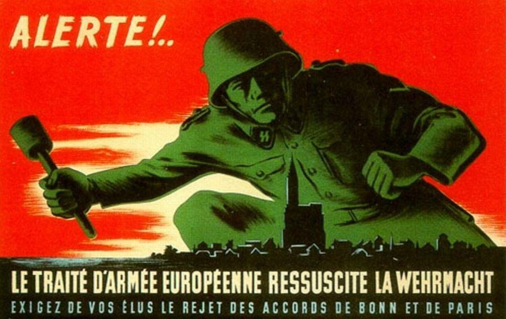
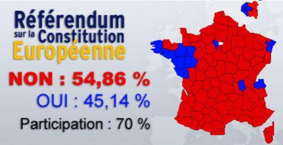

L'Histoire de l'Humanité n'est jamais figée dans le temps. Le jeu des puissances à la surface de la planète ne s'arrête jamais. Le Monde tel qu'il est apparu à la fin de la seconde guerre mondiale, consacrant l'hyper-puissance des Etats-Unis d'Amérique est en train de s'estomper et laisse apparaître une nouvelle organisation géopolitique.
Les mondialistes n'ont plus d'avenir
Cette phrase, prononcée par Donald Trump aux Nations Unies1 l'an passé, en écho du discours du discours qu'Emmanuel Macron venait de tenir, dans le cadre d'une réunion sur le climat, mérite qu'on l'examine. Le cadre était loin d'être neutre, il s'agissait d'un « Sommet Climat » terme consacré à ces grand'messes mondialistes organisées sous l'égide de l'ONU afin de nous rappeler que, comme le disait Simon Linett en 2008 « le réchauffement anthropique est un problème mondial qui ne peut se résoudre qu'au niveau d'un gouvernement mondial...2 »
Cette mondialisation a une apparence : celle d'une sécurité et d'une prospérité mondiales qui résulteraient de la généralisation d'un libre-échange planétaire dans lequel il n'existerait plus de raison de déclencher des guerres, le bonheur des peuples étant assuré. Dans la réalité, il s'agissait surtout de donner le pouvoir à une « élite », seule capable aux yeux des promoteurs de cette idée, de diriger le monde en contrôlant les leviers essentiels.
Pour arriver dans ce « paradis terrestre », il fallait progressivement faire disparaître les frontières, mais aussi les peuples et leurs identités culturelles.
La seconde tentative
Après l'échec patent de la Société des Nations, définitivement acté au début de la seconde guerre mondiale, ayant montré que, du point de vue de cette élite, les peuples et surtout la démocratie qui leur donnait le pouvoir politique étaient des obstacles dont il fallait s'affranchir. Après la Seconde Guerre mondiale et les massacres des populations (y compris civiles) qu'elle avait engendrée, l'heure devenait propice pour installer un pouvoir mondial qui garantirait la paix.
L'Organisation des Nations Unies était une première étape. Mais il fallait trouver une sorte « d'appartement témoin » qui ferait la démonstration in situ de ce que pourrait être le monde futur. Particulièrement touchée par deux guerres successives, la population européenne était particulièrement sensible et il suffisait de dénoncer le nationalisme comme responsable des guerres.
Le raisonnement était simple. Le nationalisme cause la guerre, faisons disparaître les nations. C'est sur cette base fausse que les théoriciens de l'Europe « intégrée » jetèrent leur dévolu. Pour « enjamber » les nations européennes, le fédéralisme était l'objectif final, mais nécessitait une approche progressive. Ce fut la « politique des petits pas » chère à Jean Monnet3, qui préconisait de multiplier les associations dans tous les domaines des pays européens, et en particulier la France et L'Allemagne. Créée avec l'aide vigilante du Département d'Etat, l'Allemagne fédérale, composée de « Landers » était devenue « facile à manier » pour ces projets, qui étaient tous autant de perte de souveraineté nationale. On assista alors à plusieurs tentatives telles que la création de la CED (défense européenne) ou encore la CECA (charbon et acier) et d'autres moins connues qui échouèrent toutes, en raison de l'attachement du peuple français à sa souveraineté. Ce ne fut qu'en 1957, après une gestation difficile, que fut créé le « marché commun 4» par la signature du Traité de Rome en mars 1957.

De Gaulle entre en scène
En mai 1958, la IVème République vit ses derniers instants le Président Coty se résout à faire appel « au plus illustre des Français » en appelant le Général de Gaulle. Au début, de Gaulle veut régler en priorité le problème algérien pour se retourner ensuite vers l'Europe ayant « les mains libres ».
De Gaulle, qui avait suivi de près la construction européenne, avait parfaitement discerné que le but final était une fédéralisation de l'Europe sous le contrôle de « l'ami américain » auquel il s'était opposé dès la Libération. Il avait notamment fait échouer la tentative américaine d'imposer le dollar « AMGOT5 » à la population française.
Cependant, même si l'affaire algérienne est pour lui une priorité, il arrive avec un plan bien arrêté dans sa tête. Il veut doter au plus vite la France de l'arme nucléaire. Bien que lancé sous la IVème République, à laquelle il faut rendre cette justice, le programme nucléaire militaire n'était pas considéré avant de Gaulle comme une priorité. Ce dernier était informé des idées en matière de dissuasion, des réflexions du général Gallois6, qui venait de passer en 2ème section. De Gaulle s'en inspira assez largement, cela me fut confirmé par Pierre Clostermann7, qui voulût bien m'honorer de son amitié, et qui me raconta la genèse de la force de dissuasion française et les réunions auxquelles il avait assisté.
En 1960, à Reggane, eut lieu la première explosion nucléaire, mettant ainsi notre pays dans le club alors très fermé des pays disposant de l'arme atomique. Pour autant, et malgré les pressions innombrables qui s'exerçaient sur lui, de Gaulle refusa, contrairement aux Anglais, de donner les clés de la force nucléaire française aux Américains. Il justifia cette position en disant que le concept de la dissuasion nucléaire était basé sur une défense « tous azimuts » sans aucune exception. C'est cette position formelle qui a permis à la France d'occuper une place à part sur l'échiquier international en lui donnant une indépendance totale. C'est justement ce dont de Gaulle allait avoir besoin pour proposer, dans le Traité de l'Élysée signé en janvier 1963 par le chancelier Conrad Adenauer, à l 'Allemagne la protection du bouclier nucléaire français. Il se trouvait alors en opposition frontale avec l'OTAN. La suite est connue, les députés allemands ont préféré la puissance militaire américaine.
La dés-industrialisation
De Gaulle disparu, l'Angleterre entra dans l'Europe et fit pencher la balance vers le libéralisme débridé.
Crée en 1973, la « Commission Triatérale » est devenue un des relais majeurs de ce projet. Un article du Monde Diplomatique publié en novembre 2003 sous le titre « Pouvoirs opaques de la Trilatérale8 » est très explicite. Dans cette nouvelle organisation mondiale, destinée à affirmer la toute-puissance de la finance et des échanges commerciaux. Dans un cadre totalement déréglementé, les grands perdants ne pouvaient être que les classes moyennes que le capitalisme industriel avait réussi à faire émerger dans les pays occidentaux. Les plus touchées par ces transferts industriels qui faisaient des pays émergents les nouveaux ateliers du monde - en raison de leurs coûts de fabrication beaucoup plus faibles -, furent naturellement ces classes sociales. Peu enclines à la révolte, elles allaient se servir de leurs bulletins de vote pour manifester leur aversion et la crainte que leur inspirait ce système qui leur avait été imposé, souvent malgré elles.
Autant le capitalisme industrie était distributeur de richesses (Henry Ford construisait des voitures pour les vendre à ses ouvriers), autant le capitalisme financier est concentrateur de ces mêmes richesses dans un petit nombre des mains.
Le divorce et la montée du populisme
Ce qui faisait la fortune des « élites » ruinait les classes plus « populaires » Les élites devinrent de moins en moins démocratiques et les peuples de plus en plus avides de souveraineté. Les élites mondialistes voulaient la fin des nations, alors que les peuples réclamaient leur protection. De partout, les partis populistes gagnèrent du terrain, élection après élection. En France, cela commença avec le traité destiné a promulguer une constitution européenne.
Le score du référendum du 29 mai 2005 fut sans appel. Pourtant, la présence au second tour de l'élection présidentielle de 2002 de Jean Marie Le Pen aurait dû inciter la classe politique française gouvernante à y réfléchir. Sa réponse à l'époque a été de modifier la Constitution pour ne plus avoir à proposer de référendum.
Pourtant, le peuple français croyait en l'avenir de l'Europe. Simplement, lorsqu'il pensait Europe, il pensait plutôt à la vision d'une Europe des nations et on se gardait bien de le détromper. Comme disait le cardinal de Retz : « on ne sort de l'ambiguïté qu'à son propre détriment » et il était plus confortable pour nos élites de conserver cette ambigüité. Mais la machine fédérale avançait. L'euro était en vigueur et, au-delà des délocalisations d'usine, on vit arriver, autorisés par « l'espace Schengen » les premiers « travailleurs détachés » La crise financière de 2008 et son long cortège de mesures dites « d'austérité » ont suffi pour retirer à nos concitoyens les rares illusions qu'ils conservaient.
Ensuite, ce fut le Brexit, interminable affrontement entre une élite dirigeante acquise à la mondialisation et un peuple britannique qui, après l'avoir expérimenté, n'en voulait plus.
Le coup fatal à la mondialisation : Poutine, Trump et Xi-Jiping
Avec ces trois chefs d'État, est réapparu un système que les mondialistes croyaient avoir éradiqué, celui des intérêts nationaux. Poutine a, le premier, dit clairement qu'il défendrait les intérêts9 de la Russie et a agi dans ce sens. Trump ne se cache pas de son engouement pour la « doctrine de Monroe10 » et le retour à l'isolationnisme américain. Quant à Xi Jimping, son discours de Davos11 de 2017 est on ne peut plus clair. En 2049, cent après la révolution communiste chinoise, la Chine sera la première puissance économique et militaire de la planète. On voit donc parfaitement ce qui a justifié le propos de Donald Trump cité au second paragraphe.
La riposte d'Emmanuel Macron
Apparemment, notre président se refuse à enterrer la mondialisation. Son idée, qu'il est pratiquement le seul à défendre encore, est celle de l'intégration européenne. Dans son discours devant la dernière promotion de l'École de Guerre12, il se félicite de la réduction de notre force de dissuasion nucléaire. Or, le principe élémentaire qui soutent la dissuasion est que, pour être efficace, elle se doive d'être dissuasive. Sa réduction semble donc plutôt contre-productive.
Ensuite, il envisage de s'associer avec d'autres pays européens pour élargir cette force de dissuasion.
« Soyons clairs : si une négociation et un traité plus larges (sont) possibles, nous le souhaitons […]. Les Européens doivent être parties prenantes et signataires du prochain traité car il s’agit de notre sol »
Or, ce qu'oublie Emmanuel Macron, c'est qu'une telle décision, qui engage les intérêts vitaux de notre pays, (puisqu'il s'agit de notre défense nationale) ne peut être décidée par lui seul. Elle concerne l'ensemble du peuple Français, dont le consentement ne peut être obtenu sans recours à un référendum. Évidemment, il faudrait renégocier certains traités, mais on peut s'attendre, (contrairement au vote du Bundestag de juin 1963 sur le traité de Paris) que les Allemands soient tout à fait d'accord. Dans le climat social actuel, il est quasi-certain que le peuple français répondrait « non » à un tel référendum. Un passage « en force » risque également d'être périlleux et certaines voix se sont d'ores et déjà mobilisées contre ce projet13. Notre président devrait pourtant savoir qu'une force dite « de dissuasion », ne peut se concevoir que dans le cadre de la défense d'une nation souveraine qui serait menacée par une puissance étrangère. L'Europe n'étant pas une nation, on ne voit pas qui pourrait menacer l'Europe en tant que telle. La souveraineté européenne n'existe pas, pas plus d'ailleurs que le peuple européen. Pourquoi vouloir à tout prix pousser les feux d'une mondialisation moribonde en allant à marche forcée vers une intégration européenne qui ne peut se faire aujourd'hui qu'à l'encontre de nos intérêts nationaux ?
Encore une fois, Emmanuel Macron devrait méditer les deux phrases suivantes du général de Gaulle :
« La seule réalité internationale, ce sont les nations » et « Il n'est pire déformation de l'esprit que de voir les choses non pas telles qu'elles sont mais telles que l'on voudrait qu'elles soient »
Partager cette page